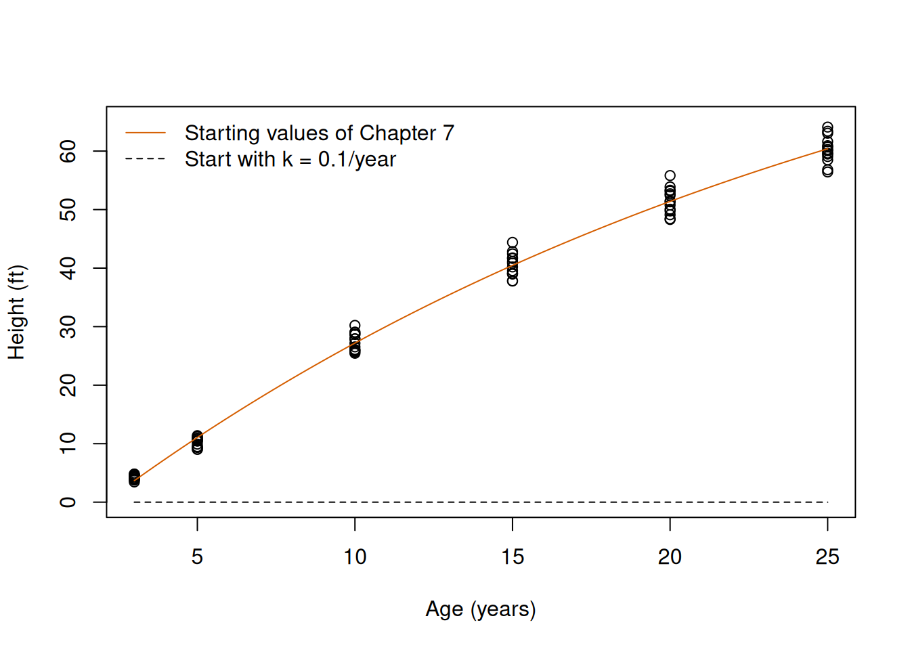
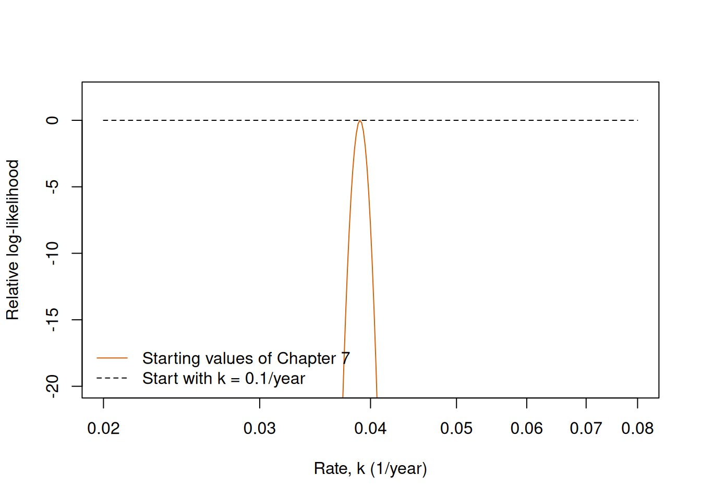

# Load RTMB first and RTMBdist second.
library(RTMB)
library(RTMBdist)Chapter 8: Numerical optimisation
The exercises take three fits that go wrong: the growth curve of loblolly pines with complete pooling (Exercise 1, from Exercise 1 of the Chapter 7 practical), a Gamma model of the body masses of Adelie penguins (Exercise 2) and the REML fits of a simulation of the variance among sites (Exercise 3, from Exercise 5 of the Chapter 7 practical). Each exercise is a full diagnosis in four steps: the symptom, a fit from plausible starting values that reports convergence code 0; the diagnosis, with the checks of the theory; the remedy; and the confirmation that the remedy found the maximum. All three exercises are the core of the practical. Work through the first exercise, which is worked in full on this page, before trying the other two. The ideas and tools are introduced in the Chapter 8 theory.
As in the theory, every model is written and fitted with the packages RTMB and RTMBdist. Exercise 1 also uses the package DEoptim for differential evolution, which you need to install once with install.packages("DEoptim"); we call its functions with the prefix DEoptim::, without attaching the package. Load RTMB first and RTMBdist second:
1 Exercise 1: Growth of loblolly pines
The data set Loblolly of base R contains the heights of 14 loblolly pines (Pinus taeda), each measured at the ages of 3, 5, 10, 15, 20 and 25 years, 84 measurements in total, with the heights in feet. In Exercise 1 of the Chapter 7 practical we described all the trees with one growth curve (complete pooling) and a Normal observation model,
\[ H_i\sim\operatorname{Normal}\left(h(t_i),\,\sigma^2_{\mathrm{obs}}\right), \qquad h(t)=A\left(1-e^{-k(t-t_0)}\right), \]
where \(H_i\) is the height of measurement \(i\) at the age \(t_i\), \(A\) is the asymptote (ft), \(k\) is the rate at which the curve approaches it (1/year), \(t_0\) is the age at which the curve crosses zero height (years), and \(\sigma_{\mathrm{obs}}\) is the standard deviation of the heights around the curve (ft). The asymptote, the rate and the standard deviation are optimised on the log scale. Chapter 7 read its starting values from a plot of the data, and the fit reached the maximum. Here we start from another reading of the same plot.
- Fit the model as in Chapter 7, from the starting values \(A=80\) ft, \(k=0.05\)/year, \(t_0=2\) years and \(\sigma_{\mathrm{obs}}=2\) ft. Then fit it from the same values with \(k=0.1\)/year, a curve that reaches 63% of its asymptote 10 years after \(t_0\) instead of 20 years, which is just as plausible a reading of the plot. Compare the convergence codes, the minima of the NLL and the estimates on the original scale. What curve does the second fit describe? Plot both curves over the data. See A fit that stops in the wrong place.
- Diagnose the second fit: its estimates on the optimised scale, the gradient at the solution and
sdreport(). Calculate a slice of the log-likelihood along \(\log(k)\) through the solution, next to the same slice through the first fit, and plot both as relative log-likelihoods. Which checks reveal the problem, and which do not? Calculate the gradient at the starting values of the second fit: what does it say about the first step of BFGS? See Diagnosing a fit and How a gradient method searches. - Fit the model from 20 sets of random starting values within a box of plausible values: \(A\) from 30 to 300 ft, \(k\) from 0.005 to 0.5/year, \(t_0\) from \(-5\) to 5 years and \(\sigma_{\mathrm{obs}}\) from 0.5 to 20 ft, drawn uniformly on the optimised scales (set seed 811 before the loop). Where did the fits end, and how many reached the lowest NLL? Restart BFGS from the best fit. See Starting values and multiple starts.
- Fit the model from the second set of starting values of question 1 with
nlminb(). Then search the box of question 3 with differential evolution, withDEoptim::DEoptim(), 40 members and 200 generations (set seed 812), and refine its best member with BFGS. Do both reach the minimum of question 3? See Other local optimisers and Global search. - Confirm the best fit with the gradient and
sdreport(), and compare its estimates with those of Chapter 7. What would you report about the fits of this exercise? See A recipe for a difficult fit.
1.1 Solution
1.1.1 Question 1
We load the data and keep the age and the height of each measurement; this model does not need the tree. The NLL is the one of Chapter 7:
# Loblolly pines (see ?Loblolly), as an ordinary data frame.
data(Loblolly, package = "datasets")
pines = as.data.frame(Loblolly)
# List of data: the age (years) and the height (ft) of each measurement.
pine_data = list(age = pines$age, height = pines$height)
# Negative log-likelihood with one growth curve for all the trees (complete pooling).
pooled_nll = function(parms, data) {
getAll(parms, data)
A = exp(log_A)
k = exp(log_k)
sd_obs = exp(log_sd_obs)
# Expected height at the age of each measurement.
mu = A * (1 - exp(-k * (age - t0)))
-sum(dnorm(x = height, mean = mu, sd = sd_obs, log = TRUE))
}We process the NLL with the starting values of Chapter 7 and fit it. The second fit uses the same object, with its starting values on the optimised scales given to optim():
# Connect a likelihood to a data set.
cmb = function(f, d) function(p) f(p, d)
# Process the NLL with the starting values of Chapter 7, and fit it.
pine_start = list(log_A = log(80), log_k = log(0.05), t0 = 2, log_sd_obs = log(2))
pooled_obj = MakeADFun(cmb(pooled_nll, pine_data), pine_start, silent = TRUE)
pooled_fit = optim(
par = pooled_obj$par,
fn = pooled_obj$fn,
gr = pooled_obj$gr,
method = "BFGS"
)
# The same starting values with k = 0.1/year, on the optimised scales.
fast_start = c(log_A = log(80), log_k = log(0.1), t0 = 2, log_sd_obs = log(2))
fast_fit = optim(par = fast_start, fn = pooled_obj$fn, gr = pooled_obj$gr, method = "BFGS")A small function returns the estimates of a fit on the original scale, so that we can compare the two fits in one table:
# Estimates on the original scale: A and sd_obs in ft, k in 1/year, t0 in years.
pine_estimates = function(fit) {
c(
A = exp(fit$par[["log_A"]]),
k = exp(fit$par[["log_k"]]),
t0 = fit$par[["t0"]],
sd_obs = exp(fit$par[["log_sd_obs"]])
)
}
# Convergence code, minimum of the NLL and estimates of the two fits.
signif(rbind(
chapter_7 = c(convergence = pooled_fit$convergence, nll = pooled_fit$value,
pine_estimates(pooled_fit)),
fast_rate = c(convergence = fast_fit$convergence, nll = fast_fit$value,
pine_estimates(fast_fit))
), 4) convergence nll A k t0 sd_obs
chapter_7 0 162.8 1.023e+02 3.892e-02 2.059 1.681
fast_rate 0 425.5 1.546e-08 3.583e-06 3.242 38.340# Root mean square of the heights (ft).
sqrt(mean(pine_data$height^2))[1] 38.33751Both fits report convergence code 0. The first reaches the estimates of Chapter 7, with a minimum of the NLL of 162.82. The second stops at 425.49, 263 units higher, with an asymptote of about \(1.5\times10^{-8}\) ft and a rate of about \(3.6\times10^{-6}\)/year. Its curve is practically zero at every age, and its standard deviation, 38.3 ft, is the root mean square of the heights: the spread of the 84 heights around a curve of zero. This is the curve at zero that the CO₂ model of the theory reached from a high asymptote. The plot shows the two curves (Figure 1):
# Growth curve: asymptote A, rate k and age t0 at which the height is zero.
growth = function(t, A = 1, k = 1, t0 = 0) {
A * (1 - exp(-k * (t - t0)))
}
# Measurements, and the curves of the two fits.
chapter_7_est = pine_estimates(pooled_fit)
fast_est = pine_estimates(fast_fit)
plot(height ~ age, data = pine_data, ylim = c(0, 65), xlab = "Age (years)",
ylab = "Height (ft)")
curve(growth(x, A = chapter_7_est[["A"]], k = chapter_7_est[["k"]], t0 = chapter_7_est[["t0"]]),
add = TRUE, col = "#D55E00")
curve(growth(x, A = fast_est[["A"]], k = fast_est[["k"]], t0 = fast_est[["t0"]]),
add = TRUE, lty = 2)
legend("topleft", legend = c("Starting values of Chapter 7", "Start with k = 0.1/year"),
col = c("#D55E00", "black"), lty = c(1, 2), bty = "n")
1.1.2 Question 2
We look at the solution on the optimised scales, the gradient there and sdreport(). The object has been evaluated at many points, so we pass the values of this fit to sdreport() with par.fixed, as in the theory:
# The solution on the optimised scales, and the gradient there.
fast_fit$par log_A log_k t0 log_sd_obs
-17.985311 -12.539391 3.241657 3.646429 pooled_obj$gr(fast_fit$par) [,1] [,2] [,3] [,4]
[1,] -1.504959e-12 -1.504912e-12 1.024158e-13 4.716017e-06# sdreport() at the values of this fit.
fast_sd = sdreport(pooled_obj, par.fixed = fast_fit$par)
fast_sdsdreport(.) result
Estimate Std. Error
log_A -17.985311 NaN
log_k -12.539391 NaN
t0 3.241657 NaN
log_sd_obs 3.646429 NaN
Warning:
Hessian of fixed effects was not positive definite.
Maximum gradient component: 4.716017e-06 On the optimised scales, \(\log(A)\) is about \(-18\) and \(\log(k)\) about \(-12.5\): both parameters ran towards zero, which lies at \(-\infty\) on the log scale. The gradient is tiny (its largest element, for \(\log(\sigma_{\mathrm{obs}})\), is about \(5\times10^{-6}\)), so the gradient alone does not reveal the problem. sdreport() does: the Hessian is not positive definite and no standard error can be calculated.
The slice fixes the other three parameters where each fit stopped and varies the rate between 0.02 and 0.08/year, with a for loop over pooled_obj$fn(). We draw each slice relative to the log-likelihood where its fit stopped:
# Slices along log(k) through the two fits: the other parameters stay where each fit stopped.
log_k_grid = seq(from = log(0.02), to = log(0.08), length.out = 301)
slice_chapter_7 = rep(NA, times = length(log_k_grid))
slice_fast = rep(NA, times = length(log_k_grid))
for (i in seq_along(log_k_grid)) {
par_chapter_7 = pooled_fit$par
par_chapter_7[["log_k"]] = log_k_grid[i]
par_fast = fast_fit$par
par_fast[["log_k"]] = log_k_grid[i]
# Relative log-likelihood: the difference from the log-likelihood where the fit stopped.
slice_chapter_7[i] = -pooled_obj$fn(par_chapter_7) + pooled_fit$value
slice_fast[i] = -pooled_obj$fn(par_fast) + fast_fit$value
}
# Both slices against the rate, on a logarithmic axis.
plot(exp(log_k_grid), slice_chapter_7, type = "l", log = "x", ylim = c(-20, 2),
col = "#D55E00", xlab = "Rate, k (1/year)", ylab = "Relative log-likelihood")
lines(exp(log_k_grid), slice_fast, lty = 2)
legend("bottomleft", legend = c("Starting values of Chapter 7", "Start with k = 0.1/year"),
col = c("#D55E00", "black"), lty = c(1, 2), bty = "n")
The slice through the first fit has a sharp peak at the estimate of the rate, 0.039/year (sharp because the asymptote and \(t_0\) stay fixed, so a small change of the rate moves the whole curve away from the data). The slice through the second fit is flat: when the asymptote is practically zero, the curve stays at zero whatever the rate, so the NLL does not depend on \(k\). The same holds for \(t_0\), and for the asymptote itself over many orders of magnitude, because a curve of \(10^{-8}\) ft and one of \(10^{-2}\) ft are both zero compared with the heights. These flat directions are why the Hessian is not positive definite. So the estimates on the optimised scales, sdreport() and the slice reveal the problem, and the gradient and the convergence code do not.
How did the search get there? The gradient at the starting values of the second fit is:
# Gradient at the starting values with k = 0.1/year.
pooled_obj$gr(fast_start) [,1] [,2] [,3] [,4]
[1,] 13533.96 6194.055 -751.298 -3754.323Its elements are in the thousands. With \(k=0.1\)/year the curve lies well above the heights of the middle ages, and with a standard deviation of 2 ft every such difference weighs heavily in the NLL. The first step of BFGS goes along the negative gradient (theory), so it starts with a change of thousands of units in \(\log(A)\). The line search shortens the step until the NLL falls, and the first point where it falls already has an asymptote of practically zero: a curve of zero with a large standard deviation describes the heights better than the starting curve with \(\sigma_{\mathrm{obs}}=2\) ft. From there no slope leads back.
1.1.3 Question 3
The box is given on the optimised scales, in the order of the parameters of pooled_obj. The loop draws one set of starting values with runif() in each repetition, fits the model from it and stores the minimum of the NLL, the convergence code and the estimates on the optimised scales; the seed is set once, before the loop:
# Box of plausible starting values on the optimised scales: log asymptote, log rate,
# age at zero height and log standard deviation.
start_lower = c(log(30), log(0.005), -5, log(0.5))
start_upper = c(log(300), log(0.5), 5, log(20))
# 20 fits from random starting values within the box.
n_starts = 20
multi_results = data.frame(
nll = rep(NA, n_starts),
convergence = NA,
log_A = NA, log_k = NA, t0 = NA, log_sd_obs = NA
)
set.seed(811)
for (i in 1:n_starts) {
start = runif(4, min = start_lower, max = start_upper)
names(start) = names(pooled_obj$par)
fit = optim(par = start, fn = pooled_obj$fn, gr = pooled_obj$gr, method = "BFGS")
multi_results[i, ] = c(fit$value, fit$convergence, fit$par)
}
# Where the 20 fits ended: minimum of the NLL (rounded) against the convergence code.
table(nll = round(multi_results$nll, 1), convergence = multi_results$convergence) convergence
nll 0
162.8 5
373.1 2
425.5 12
551.2 1All 20 fits report code 0, but only 5 reach the lowest NLL, 162.8. The others end in three places. Twelve stop at the curve at zero of question 1 (425.5). Two stop at 373.1, with the rate run towards infinity, which makes the curve a constant; the estimates on the optimised scales show that its asymptote is the mean of the heights:
# Estimates of the fits that ended at 373.1, and the mean of the heights (ft).
multi_results[round(multi_results$nll, 1) == 373.1, ] nll convergence log_A log_k t0 log_sd_obs
3 373.1119 0 3.477059 22.10266 0.6810957 3.02287
7 373.1119 0 3.477059 21.80525 1.1916336 3.02287mean(pine_data$height)[1] 32.3644The asymptote of these fits is \(e^{3.477}\approx32.4\) ft, the mean of the 84 heights, and \(\log(k)\) is about 22. The last fit (551.2) ran far away. These are the failures of the theory again: the curve at zero, the constant curve and a search that runs away. We restart BFGS from the best of the 20 fits:
# Restart BFGS from the best of the 20 fits.
best = which.min(multi_results$nll)
best_start = unlist(multi_results[best, names(pooled_obj$par)])
best_fit = optim(par = best_start, fn = pooled_obj$fn, gr = pooled_obj$gr, method = "BFGS")
c(convergence = best_fit$convergence, nll = best_fit$value)convergence nll
0.000 162.817 The restart stays at 162.82, the minimum of the first fit of question 1. Five of 20 starts is a quarter, so in this model a single fit from random starting values in this box fails more often than not; the agreement of five fits on the same minimum, with nothing lower, is evidence that it is the global minimum.
1.1.4 Question 4
nlminb() takes the starting values, the NLL and the gradient of the same object:
# nlminb() from the start with k = 0.1/year.
fast_nlminb = nlminb(start = fast_start, objective = pooled_obj$fn, gradient = pooled_obj$gr)
fast_nlminb[c("objective", "convergence", "message", "evaluations")]$objective
[1] 162.817
$convergence
[1] 0
$message
[1] "relative convergence (4)"
$evaluations
function gradient
33 23 From the starting values at which BFGS stopped at the curve of zero, nlminb() reaches the minimum of 162.82, because it controls the length of its steps differently and does not make the long first step of BFGS. Differential evolution needs no starting values, only the box:
# Differential evolution within the box of question 3.
set.seed(812)
pine_de = DEoptim::DEoptim(
fn = pooled_obj$fn,
lower = start_lower,
upper = start_upper,
control = DEoptim::DEoptim.control(NP = 40, itermax = 200, trace = FALSE)
)
c(nll = pine_de$optim$bestval, evaluations = pine_de$optim$nfeval) nll evaluations
162.817 8040.000 Its best member reaches the minimum as well, after 8,040 evaluations of the NLL. We refine it with BFGS, giving the elements of the best member the names of the parameters:
# Refine the best member with BFGS.
de_start = pine_de$optim$bestmem
names(de_start) = names(pooled_obj$par)
pine_de_fit = optim(par = de_start, fn = pooled_obj$fn, gr = pooled_obj$gr, method = "BFGS")
c(convergence = pine_de_fit$convergence, nll = pine_de_fit$value)convergence nll
0.000 162.817 BFGS stops at once at 162.82. Multiple starts, nlminb() and differential evolution all reach the same minimum, which none of the searches has gone below.
1.1.5 Question 5
We diagnose the restart of question 3 as in the theory and compare its estimates with those of Chapter 7:
# Largest absolute gradient and sdreport() at the best fit.
max(abs(pooled_obj$gr(best_fit$par)))[1] 1.196019e-05best_sd = sdreport(pooled_obj, par.fixed = best_fit$par)
best_sd$pdHess[1] TRUEsummary(best_sd) Estimate Std. Error
log_A 4.6275393 0.05172560
log_k -3.2461303 0.07948142
t0 2.0589563 0.11578222
log_sd_obs 0.5193593 0.07715165# Estimates on the original scale: the best fit and the fit from the start of Chapter 7.
rbind(best = pine_estimates(best_fit), chapter_7 = pine_estimates(pooled_fit)) A k t0 sd_obs
best 102.2621 0.03892454 2.058956 1.68095
chapter_7 102.2621 0.03892454 2.058956 1.68095The gradient is close to zero, the Hessian is positive definite and the standard errors are small, so the best fit passes every check. Its estimates agree with those of Chapter 7: an asymptote of 102 ft, a rate of 0.039/year, \(t_0=2.06\) years and a standard deviation of 1.68 ft. The fit of Chapter 7 had found the maximum; the second start of question 1 had not.
In a report we give the estimates of the best fit with their standard errors, and say how we know that it is the maximum: BFGS from one plausible start stopped at a curve of zero with code 0, 5 of 20 random starts reached the same minimum and none went lower, and nlminb() and differential evolution confirmed it.
2 Exercise 2: Body mass of Adelie penguins
The data set penguins of the package datasets (R 4.5.0 and later) contains the body masses, in grams, of adult penguins of three species near Palmer Station, Antarctica. We fit a Gamma model with shape \(k\) and rate \(r\), the model of the tree volumes in Exercise 4 of the Chapter 4 practical, to the body masses of the 151 Adelie penguins whose mass was recorded,
\[ X_i \sim \operatorname{Gamma}(k, r), \qquad E[X_i]=\frac{k}{r}, \qquad \operatorname{Var}(X_i)=\frac{k}{r^2}, \]
where \(X_i\) is the body mass of penguin \(i\), with \(\log(k)\) and \(\log(r)\) as the parameters. Started at the method-of-moments estimates, the fit to the masses in grams stops after a single step and reports convergence code 0. Load the data with data(penguins, package = "datasets"), keep the Adelie penguins and remove the one penguin whose mass is missing (NA).
- Fit the Gamma model to the masses in grams with
dgamma(), starting at the method-of-moments estimates \(k=\bar x^2/s^2\) and \(r=\bar x/s^2\), where \(\bar x\) is the mean of the masses and \(s^2\) their empirical variance with divisor \(n\). Report the convergence code, the numbers of evaluations offnandgr, and the shape at the start and at the end of the search. What do the counts say about the search? Hint: the NLL is the one of Exercise 4 of the Chapter 4 practical. The elementcountsof the result ofoptim()is explained in Exact and approximate gradients; BFGS evaluates the gradient at its starting values and again after every step that counts as progress (Stopping rules and convergence codes). - Diagnose the fit with the gradient at the solution and a refit from the solution. How much lower is the NLL at the end of the refit? Then use the stopping rule of BFGS to explain why the first search stopped: compare the decrease of the NLL in its single step with the smallest decrease that counts as progress. Hint: the checks are those of Diagnosing a fit. The smallest decrease that counts as progress is the formula in Stopping rules and convergence codes, where \(|{-\ell(\boldsymbol\theta)}|\) is the NLL at the start of the step,
obj$fn(obj$par), andreltolissqrt(.Machine$double.eps). - Try three remedies, each from the method-of-moments estimates: (a) the masses in kilograms; (b) the parameterisation with the mean \(\mu=k/r\) and the shape, with \(\log(\mu)\) and \(\log(k)\) as the parameters, starting at the mean of the masses and the method-of-moments estimate of the shape; and (c)
nlminb()with the masses in grams. Which of them reach the maximum that the refit of question 2 found? Hint: for (a), calculate the method-of-moments estimates again from the masses in kilograms. For (b), the rate is \(k/\mu\); Exercise 1 of the Chapter 6 practical wrote the Gamma model with its mean in the same way, throughscale = mu / shape(Parameterisation). For (c), see Other local optimisers. The minimum of the NLL in kilograms differs from that in grams, so compare the estimates of the shape, which has no units. - Explain why each remedy reaches the maximum. For the masses in kilograms, calculate the smallest decrease that counts as progress at the starting values and compare it with that in grams and with the decrease of the single step of question 2. Why is the NLL smaller in kilograms? For the parameterisation, compare the correlation of the estimates of \(\log(k)\) and \(\log(r)\) with that of the estimates of \(\log(\mu)\) and \(\log(k)\), both at the maximum. Which of the three remedies and the refit of question 2 change the problem that the optimiser solves, and which search the same problem again? Hint: the effect of the units on the log-likelihood is explained in The likelihood function of Chapter 4. The correlations are
cov2cor()of the elementcov.fixedofsdreport(), as in Exercise 4 of the Chapter 4 practical, withpar.fixedset to the estimates at the maximum. See Scaling and parameterisation.
3 Exercise 3: A variance among sites at zero
In Exercise 5 of the Chapter 7 practical we simulated 500 hypothetical samples of the log biomass of the herb layer (biomass in g/m²) in five quadrats at each of six sites, from a Normal model with a random intercept for each site,
\[ u_j\sim\operatorname{Normal}\left(0,\sigma^2_{\mathrm{site}}\right), \qquad Y_{ij}\mid u_j\sim\operatorname{Normal}\left(\mu+u_j,\,\sigma^2_{\mathrm{obs}}\right), \]
where \(Y_{ij}\) is the log biomass in quadrat \(i\) of site \(j\), with \(\mu=4\) and \(\sigma_{\mathrm{site}}=\sigma_{\mathrm{obs}}=1\), and estimated the variances by REML. In some samples the REML estimate of \(\sigma^2_{\mathrm{site}}\) was practically zero. In some of these the maximum of the likelihood lies at zero, and in others the fit stopped on its way towards zero although the maximum lies at a positive variance. Here we tell the two cases apart. That exercise was extra practice; if you skipped it, the code below gives you the samples, and Estimates at a boundary explains the two cases.
The code below repeats the simulation with the seed of Chapter 7, so that the samples are the same, but fits only REML, and it keeps every sample and the result of its fit. It needs the helper cmb(). As in Chapter 7, every fit starts from the values used to simulate:
# Joint NLL of a Normal model with a random intercept for each site (Chapter 7).
site_nll = function(parms, data) {
getAll(parms, data)
log_biomass = OBS(log_biomass)
# Minus the log density of the deviations of the sites, before they are used.
nll = -sum(dnorm(x = u, mean = 0, sd = exp(log_sd_site), log = TRUE))
nll - sum(dnorm(x = log_biomass, mean = mu + u[site], sd = exp(log_sd_obs), log = TRUE))
}
# The design, five quadrats at each of six sites, and the values used to simulate, which
# are also the starting values of every fit. The log biomasses are placeholders.
n_sites = 6
site_index = rep(seq_len(n_sites), each = 5)
site_start = list(mu = 4, log_sd_site = log(1), log_sd_obs = log(1), u = rep(0, n_sites))
placeholder_obj = MakeADFun(
cmb(site_nll, list(log_biomass = rep(0, times = 5 * n_sites), site = site_index)),
site_start,
random = "u",
silent = TRUE
)
# 500 hypothetical samples (one column each) and the REML fit of each, with the mean
# integrated out together with the site deviations.
n_samples = 500
reml_samples = matrix(NA, nrow = 5 * n_sites, ncol = n_samples)
reml_results = data.frame(
nll = rep(NA, n_samples),
convergence = NA,
log_sd_site = NA,
log_sd_obs = NA
)
set.seed(751)
for (i in seq_len(n_samples)) {
reml_samples[, i] = placeholder_obj$simulate(placeholder_obj$par)$log_biomass
reml_obj = MakeADFun(
cmb(site_nll, list(log_biomass = reml_samples[, i], site = site_index)),
site_start,
random = c("u", "mu"),
silent = TRUE
)
reml_fit = optim(par = reml_obj$par, fn = reml_obj$fn, gr = reml_obj$gr, method = "BFGS")
reml_results[i, ] = c(reml_fit$value, reml_fit$convergence, reml_fit$par)
}
# REML estimates of the variance among sites.
reml_results$var_site = exp(2 * reml_results$log_sd_site)- Count the samples in which the REML estimate of \(\sigma^2_{\mathrm{site}}\) is below 0.001, which we call practically zero, and check their convergence codes. For each of these samples, process the NLL again with its data, and calculate the largest absolute element of the gradient at the estimates and the element
pdHessofsdreport(). What do the two checks show? Hint:which()gives the numbers of these samples. Process the NLL as in the loop above, withrandom = c("u", "mu"). The checks are those of Diagnosing a fit; the estimates of a sample are two columns ofreml_results, whichunlist()turns into a vector, as in question 3 of Exercise 1, andsdreport()needs them aspar.fixed. - Refit each of these samples from 10 sets of random starting values, with \(\sigma_{\mathrm{site}}\) and \(\sigma_{\mathrm{obs}}\) (standard deviations of the log biomass) between 0.1 and 10, drawn uniformly on the log scale (set seed 831 once, before the loop over the samples), and keep the refit with the lowest NLL. In how many samples does this refit end at a variance above 0.001 with a lower NLL than the fit of the simulation? Compare these samples with the result of
pdHessin question 1. Hint: see Starting values and multiple starts and question 3 of Exercise 1. Here the loop over the starting values sits inside the loop over the samples; store the NLL and the estimate of \(\log(\sigma_{\mathrm{site}})\) of each of the 10 fits, andwhich.min()finds the best. - Explain why the log scale puts a variance of zero at \(-\infty\), and why BFGS stops on its way there. When does the maximum of the likelihood lie at zero? For a balanced Normal design such as this one, the REML estimate has a closed form, \(\max\{0,\,s^2_{\mathrm{m}}-s^2_{\mathrm{w}}/5\}\), where \(s^2_{\mathrm{m}}\) is the variance of the six site means (divisor 5) and \(s^2_{\mathrm{w}}\) the variance of the quadrats around the means of their sites (divisor 24). This is an exact result of this special design, not of REML in general. Calculate it for the samples of question 1 and compare it with the refits of question 2. Hint: see Estimates at a boundary. For the closed form,
tapply()(question 5 of Exercise 1 of the Chapter 7 practical) gives the six site means, andsite_means[site_index]repeats the mean of its site for each of the 30 quadrats.